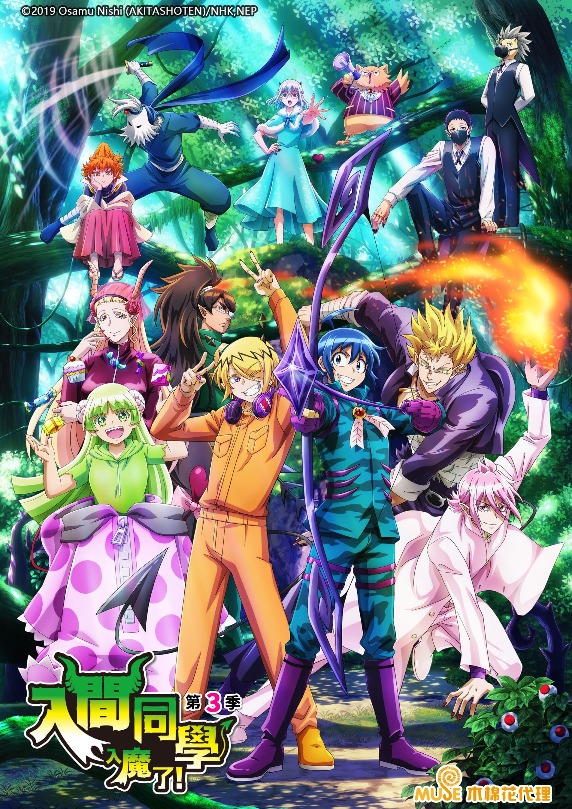

AnimeInterester
入間同學入魔了！第三季

故事簡介
「入間同學入魔了！」是一部描寫人類少年・鈴木入間成為魔界的大惡魔薩利班的孫子，並進入他擔任理事長、惡魔們就讀的惡魔學校中念書的奮鬥及成長的故事。 在第三季，入間即將面對的下一道試練是—— 勇闖魔界的巨大叢林、收集食物的競賽《收穫祭》！ 班上同學們將成為彼此的競爭對手， 充滿魄力的肉搏戰&考驗智謀的戰鬥即將開始！？
製作人員
原作：西修
導演：森脇真琴
劇本統籌：筆安一幸
角色設計：原由美子
美術監督：吉田ひとみ
色彩設計：高谷知恵
攝影監督：千葉洋之
音樂：本間昭光 / 関向弥生
動畫製作人：郷田ほづみ
聲優名單
鈴木入間：村瀬歩
阿斯莫德・艾利斯：木村良平
瓦拉克・庫菈菈：朝井彩加
阿薩謝爾・艾梅莉：早見沙織
那貝流斯・卡爾耶格：小野大輔
巴拉姆·希奇洛：小西克幸
巴巴托斯·芭琪可：竹内順子
佛爾佛爾軍曹：谷山紀章
威沛：國府田麻理子
Mr.Hat：岩崎征實
萊姆：山本希望
薩利班：黒田崇矢
歐佩菈：齋賀光希
斯伯諾克・薩布羅：佐藤拓也
安德洛・Ｍ・賈斯：柿原徹也
克羅凱爾・凱蘿莉：東山奈央
沙克斯・利德：山谷祥生
伊克斯・艾麗莎貝塔：本渡楓
凱伊姆・卡姆依：梶原岳人
阿格雷斯・皮克羅：吉永拓斗
蓋普・五右衛門：大河元気
安洛先・修奈達：土岐隼一
艾利先生：三木眞一郎
歐若博司·可可：安元洋貴
安德雷雯斯·一洛：熊谷健太郎
安德雷雯斯·二洛：野上翔
各集標題
| 話數 | 標題 | 話數 | 標題 |
|---|---|---|---|
| 1 | 問題兒童班的新學期 | 13 | 只屬於我的魔術 |
| 2 | 師父芭琪可 | 14 | 利德的苦惱 |
| 3 | 入間的真心話 | 15 | 弓箭手真正的價值 |
| 4 | 收穫祭的狼煙 | 16 | 收穫祭落幕 |
| 5 | 狡猾的惡魔 | 17 | 傳說之葉 |
| 6 | 魔性的純真 | 18 | 歡迎回來 |
| 7 | 庫菈菈的玩具箱／叫聲響徹夜晚 | 19 | 教師們的宴會 |
| 8 | 能不能找到100個同伴呢?／引以為豪的徒弟們 | 20 | 惡友/心動料理教室 |
| 9 | 多洛多洛兄弟的挑撥 | 21 | 對朋友說的話 |
| 10 | 我所認識的入間 | ||
| 11 | 魔神托托 | ||
| 12 | 將願望寄託於弓矢 |